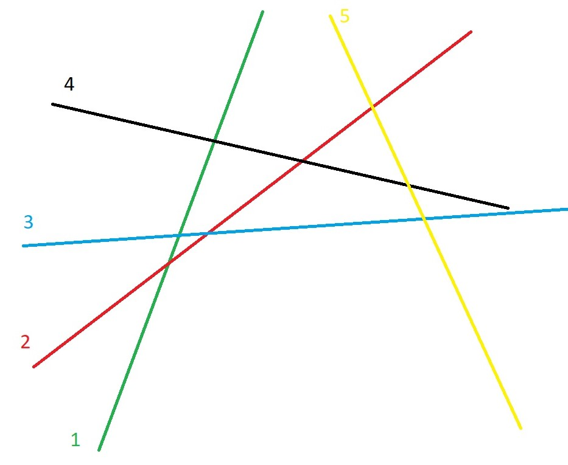
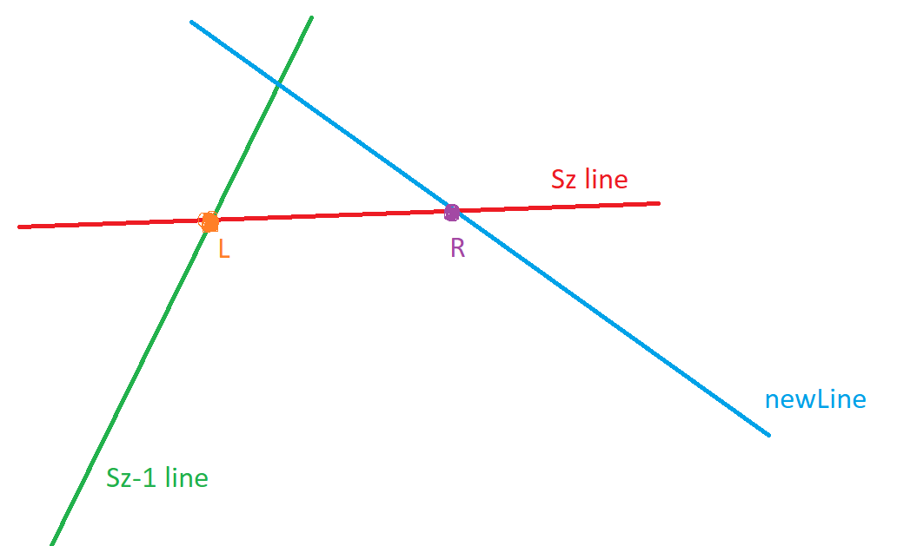
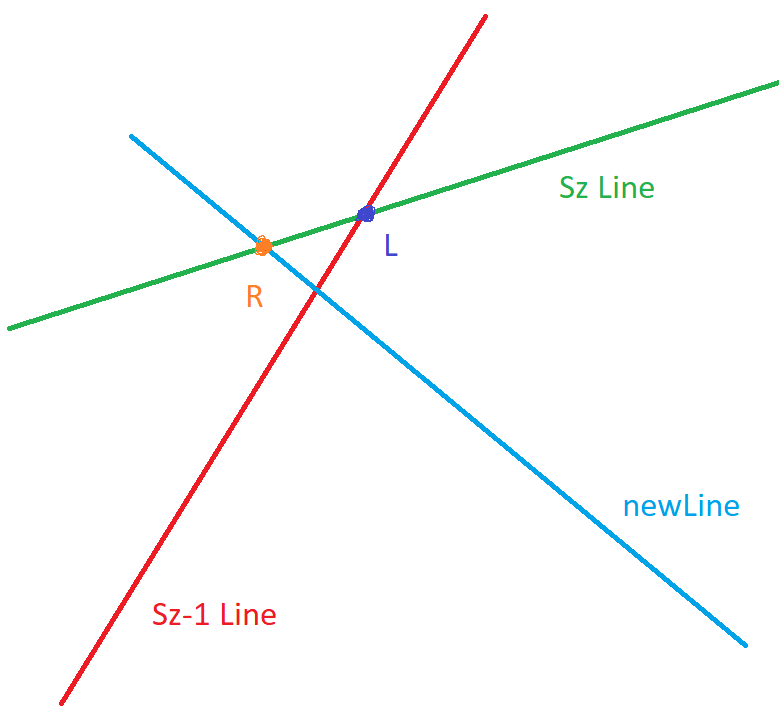

Convex Hull Trick
Convex Hull Trick - метод оптимизации динамического программирования, использующий идею выпуклой оболочки. Позволяет улучшить асимптотику решения некоторых задач, решемых методом динамического программирования, с O(n
2) до O(n*log(n)).
Пример задачи, решаемой методом convex hull trick :
Есть n деревьев с высотами a
0,...,a
n-1. Требуется спилить их все, потратив минимальное количество монет на заправку бензопилы. Но пила устроена так, что она может спиливать только по 1 метру от дерева, к которому ее применили. Также после срубленного метра пилу нужно заправлять, платя за бензин определенной кол-во монет. Причем стоимость бензина зависит от срубленных полностью деревьев. Если сейчас максимальный индекс срубленного дерева равен i, то цена заправки равна c
i. Изначально пила заправлена. Также c
n-1=0, a
0=1, a
i возрастают, c
i убывают.
Решение за O(n2): для каждого i от 0 до n-1 , dp
i равна минимальному
cj*ai + dpj, где j = 0...i-1.
Решение за O(n*log(n)):
Можно заметить, что уравнение
dpi = min(cj*ai + dpj) похоже на уравнение прямой
y = k*x + b. Тогда они будут иметь следующий вид:

Пусть мы считаем динамику для i-го дерева. Его задает x
i. Нам нужно для данного x
i найти
minj=0...i−1(kj*xi+bj) = minj=0..i−1(y[j]). Это выражение является нижней огибающей от x
i. Отрезок, который пересекает прямую x = x
i, можно найти бинарным поиском. Это потребует
O(log(n)) времени на поиск такого j, что
dpi=kj*xi+bj. Теперь осталось научиться поддерживать множество прямых и быстро добавлять i-ю прямую.
Возьмём нижнюю огибающюю множества прямых на плоскости.
Для этого воспользуемся идеей алгоритма построения выпуклой оболочки множества точек. Заведем стек S. Рассмотрим ситуацию когда мы хотим добавить новую прямую в множество. Пусть сейчас в стеке лежит Sz прямых. (xL , yL) - точка пересечения sz-1-й прямой множества и sz-й, а (xR , yR) - точка пересечения новой прямой и sz-й. Если оказалось, что новая прямая пересекает sz-ю прямую позже, чем sz-я sz-1-ю (xL ⩾ xR), то sz-ю удалим из нашего множество, иначе остановимся. Так повторяем пока количество прямых в стеке больше 2-х или xL ⩾ xR.


Асимптотика взятия множества огибающих прямых: каждая прямая ровно 1 раз добавится в стек и максимум 1 раз удалится. Значит время работы перестройки выпуклой оболочки займет
O(n) суммарно.
Добавим первую прямую. После чего для каждого i от 1 до n-1 будем бинарным поиском искать минимальный y и добавлять новую прямую в множество огибающих прямых.
Ассимптотика O(n*log(n)).
Код
Задача: Калила и Димна на лесозаготовках.
The end.